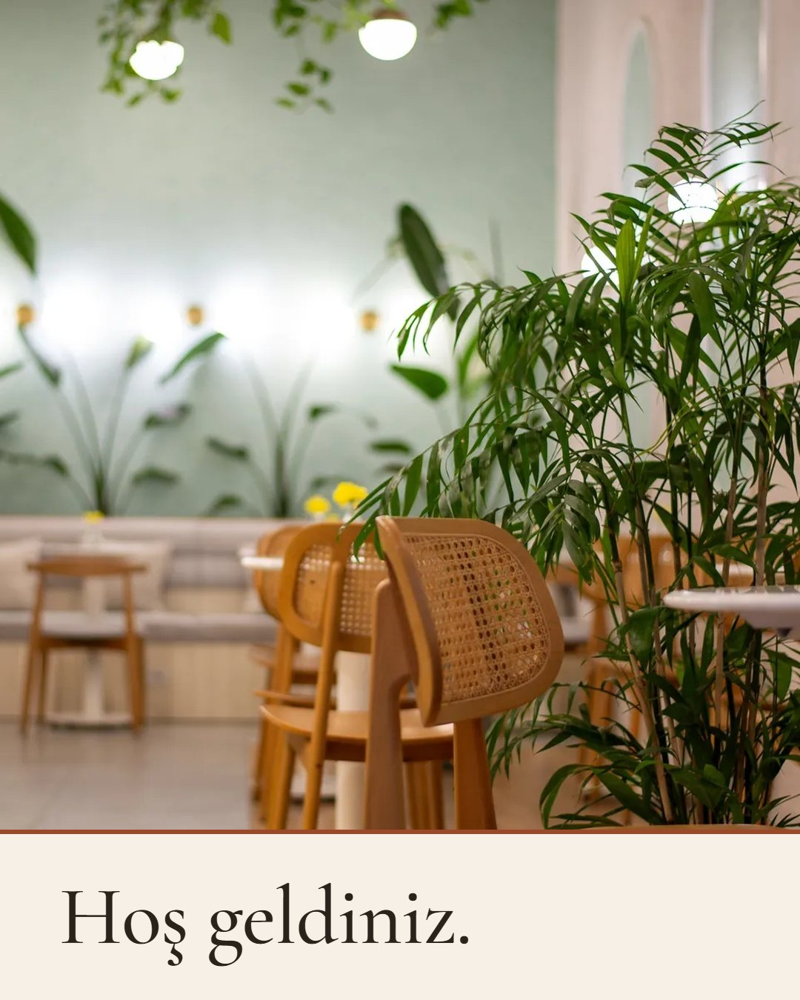
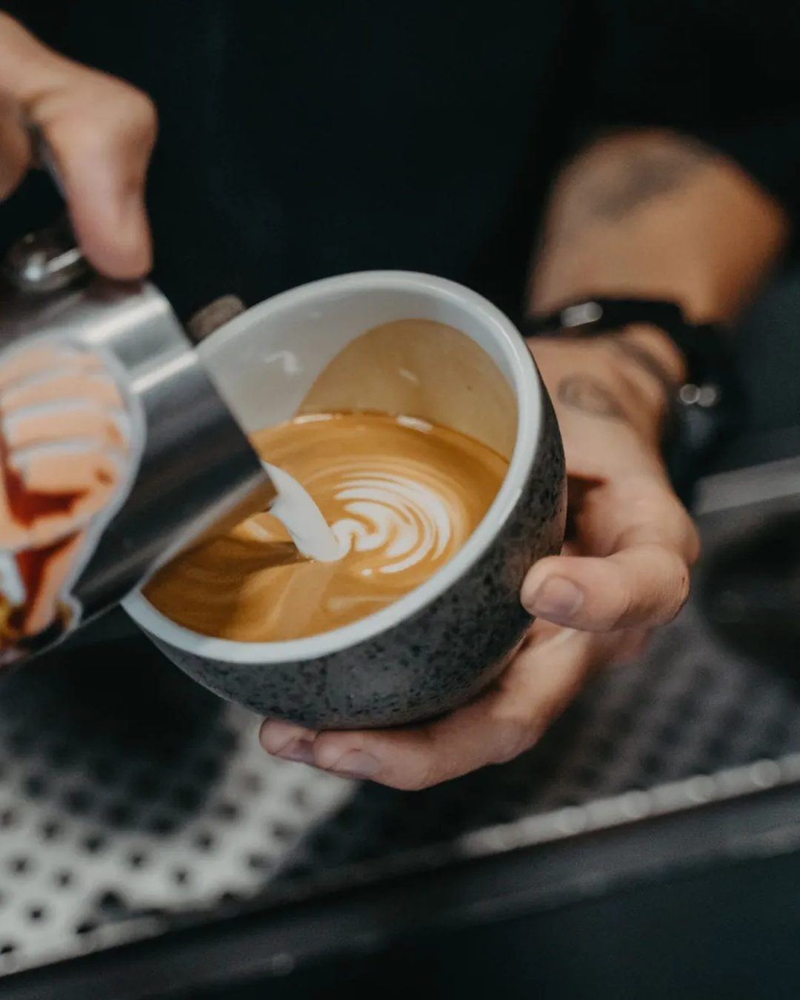
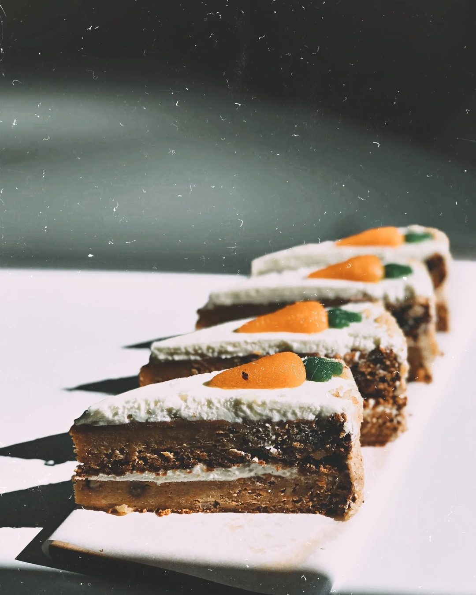
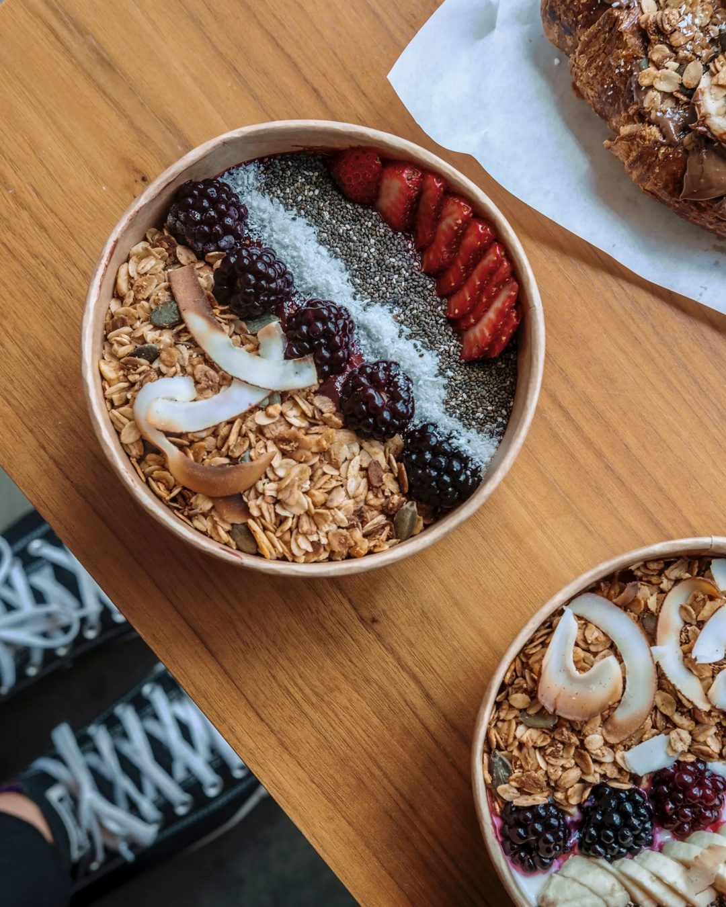
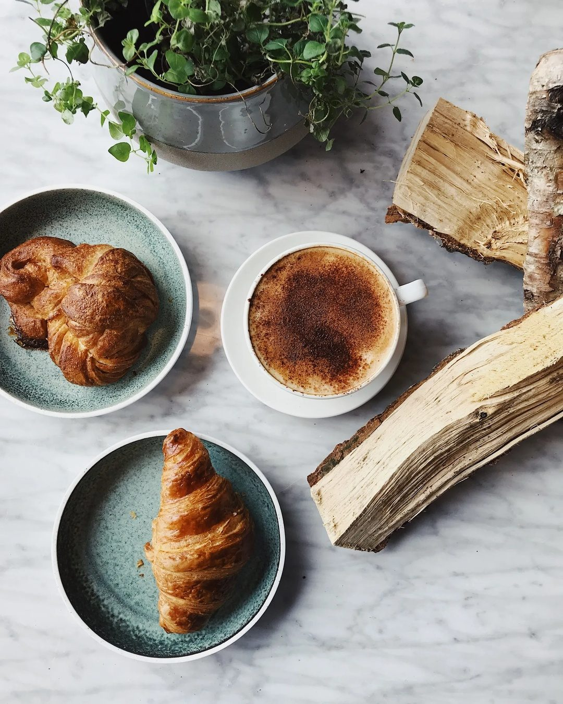
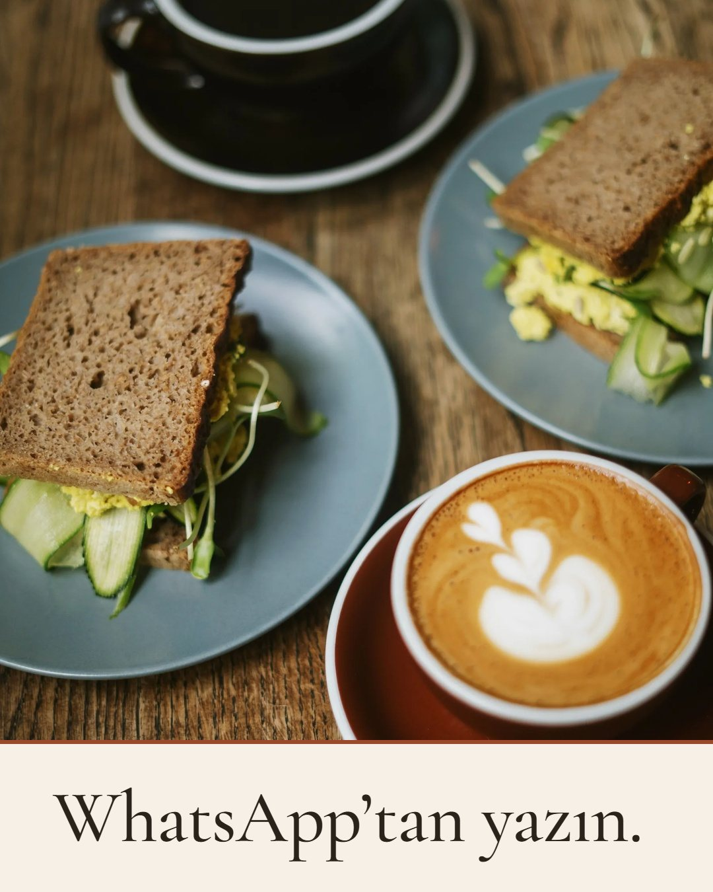
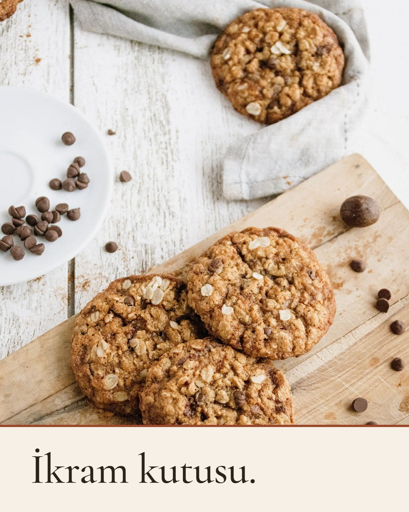
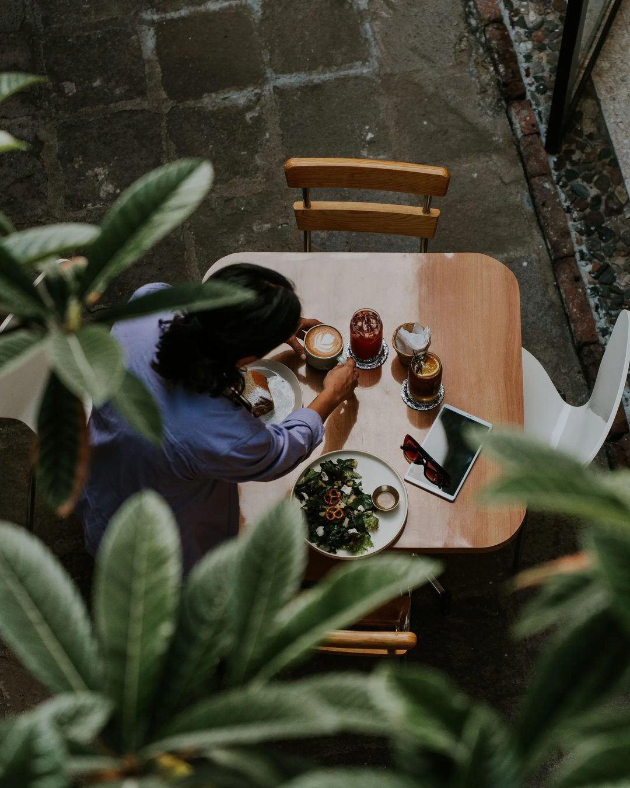

Örnek çalışma
Örnek: kurgusal bir kafe (gerçek bir işletme değildir; fotoğraflar temsilî)
Her gönderinin altındaki “Metni göster” satırına dokunarak metni ve etiketleri okuyabilirsiniz.

Salı 6 Eki · 12:00
Tanışma: “Hoş geldiniz”
Merhaba! Biz Örnek Kafe. Kahve, tatlı ve bol bitkiyle sizi bekliyoruz. Bu sayfada menüden mekâna, sipariş yollarından ikram kutusuna her şeyi paylaşacağız. Hoş geldiniz.
#ornekkafe #kafe #kahve #tatlı

Cumartesi 10 Eki · 10:30
Kahve / latte
Bir latte, bir de sohbet. Günün en iyi molası çoğu zaman bu kadar sade. Siz kahvenizi nasıl içersiniz: sütlü mü, sade mi?
#ornekkafe #latte #kahve #kafe

Salı 13 Eki · 15:00
Havuçlu kek dilimleri, içerik sorusu
Dilim dilim, üstünde minik havuçlarıyla. Bir ürünün içinde ne olduğunu merak ediyorsanız kasada sormaktan çekinmeyin; alerjiniz varsa mutlaka söyleyin. İçeriği birlikte netleştirelim.
#ornekkafe #havuçlukek #pasta #tatlı

Cumartesi 17 Eki · 11:00
Granola kâsesi, öğle molası
Meyveli, çıtır bir kâse. Öğle arasına küçük bir mola.
#ornekkafe #granola #meyve #kafe

Salı 20 Eki · 09:30
Sabah: kruvasan + kahve, etkileşim sorusu
Kruvasan, kahve ve acele etmeyen bir sabah. Sizin sabah kahvenize ne eşlik ediyor? Yorumlara yazın, merak ediyoruz.
#ornekkafe #kruvasan #sabahkahvesi #kafe

Cumartesi 24 Eki · 12:00
WhatsApp’tan sipariş
Siparişinizi WhatsApp’tan yazın, ne zaman gelmek istediğinizi söyleyin: [işletmenin WhatsApp numarası]. Sipariş Örnek Kafe tarafından onaylanır.
#ornekkafe #paketsipariş #kafe

Salı 27 Eki · 12:00
İkram kutusu (toplantı, misafir, doğum günü)
Toplantı, misafir ya da doğum günü için ikram kutusu talebinizi yazın: kaç kişi, hangi gün, kısaca söylemeniz yeterli. Ne önerdiğimizi birlikte netleştirelim.
WhatsApp: [işletmenin WhatsApp numarası]
#ornekkafe #ikramkutusu #doğumgünü

Cumartesi 31 Eki · 16:00
Masa/bahçe köşesi, hafta sonu sorusu
Bu hafta sonu masanız nerede? Yeşilin ortasında bir köşe mi, pencere kenarı mı? Kim kiminle geliyor, yorumlarda buluşalım.
#ornekkafe #haftasonu #kafe
| # | Tarih | Saat (öneri) | Konu |
|---|---|---|---|
| 1 | Salı 6 Eki | 12:00 | Tanışma: “Hoş geldiniz” |
| 2 | Cumartesi 10 Eki | 10:30 | Kahve / latte |
| 3 | Salı 13 Eki | 15:00 | Havuçlu kek dilimleri, içerik sorusu |
| 4 | Cumartesi 17 Eki | 11:00 | Granola kâsesi, öğle molası |
| 5 | Salı 20 Eki | 09:30 | Sabah: kruvasan + kahve, etkileşim sorusu |
| 6 | Cumartesi 24 Eki | 12:00 | WhatsApp’tan sipariş |
| 7 | Salı 27 Eki | 12:00 | İkram kutusu (toplantı, misafir, doğum günü) |
| 8 | Cumartesi 31 Eki | 16:00 | Masa/bahçe köşesi, hafta sonu sorusu |
Saatler öneridir; işletmenin Insights (İçgörüler) verisine göre ikinci ayda ayarlanır.
Bu bilgiler sizden onay almadan metinlere yazılmaz; doğrulanmamış fiyat, saat ya da “taze, ev yapımı” gibi iddialar kullanılmaz.
Mekânınızın fotoğrafları ve sizin onayınızla, bir aylık paketi baştan sona hazırlayıp teslim ederim.